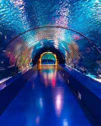
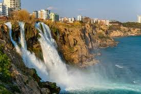
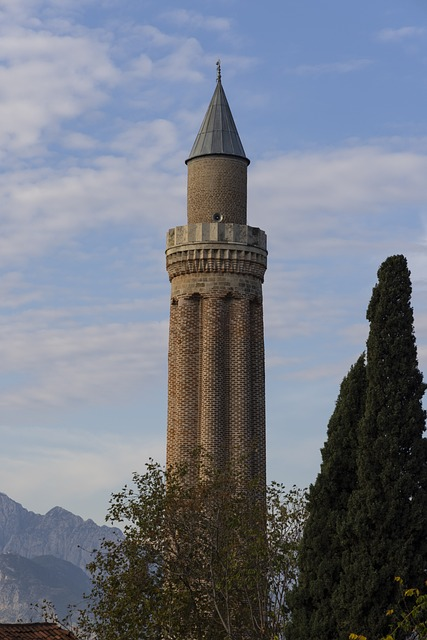
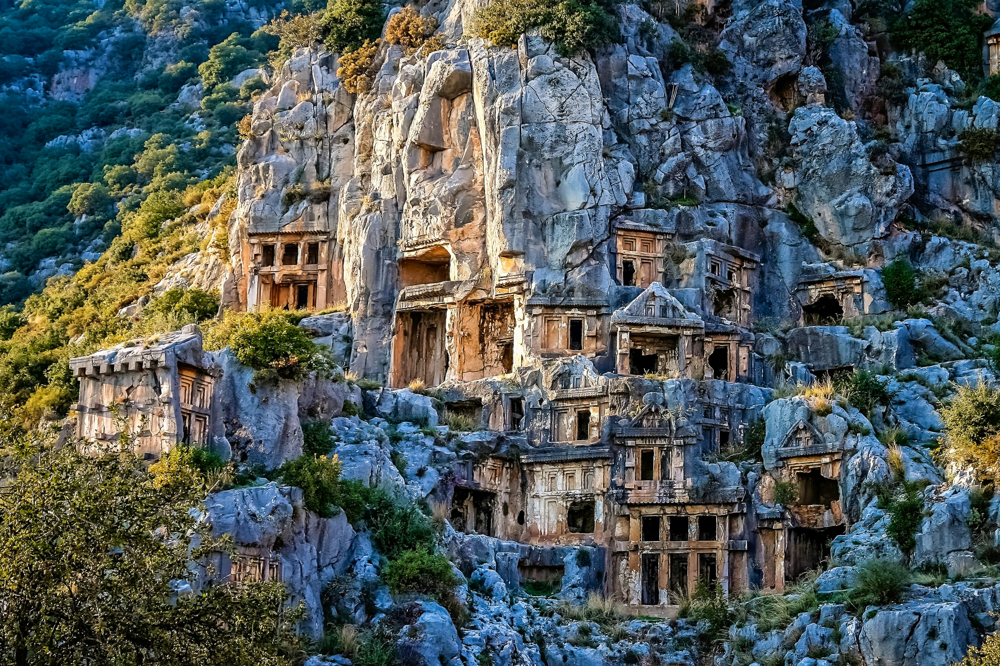
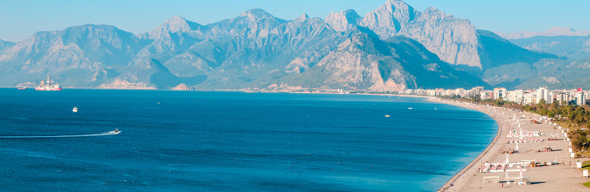

Antalya
Antalya ilinin merkezi olan şehirdir. Türkiye'de "turizmin başkenti" olarak görülür. Özellikle yaz aylarında turist sayısı artar.


Hadrian Kapısı
Hadrian Kapısı veya Üçkapılar, 130 yılında Roma İmparatoru Hadrianus'un Antalya'yı ziyareti onuruna, kenti çevreleyen sur üzerinde inşa edilmiş



